|
Probabilmente il primo illustratore per ragazzi ad occuparsi del Palio fu il fiorentino Luigi Bertelli, in arte Vamba, celebre scrittore da tutti ricordato per aver dato vita al popolare "Giornalino di Gianburrasca".
Vamba, all'età di 8/9 anni fu accompagnato dallo zio a Siena come premio per i suoi meriti scolastici. Durante questa visita, oltre ad acquisire una certa conoscenza sulle Contrade e sul Palio, fu testimone e pure vittima
di un bisticcio sorto tra un senese e un detrattore del Palio. Questo episodio gli rimase molto impresso, tanto che gli fornì lo spunto, alcuni anni dopo nell'agosto del 1906, per descriverne l'accaduto ne Il Giornalino della Domenica.
(Per sfogliare le pagine, che fanno parte della collezione privata “Il Palio di Siena” di Andrea Corti, cliccare sopra la copertina)

Per trovare un altro racconto basato sul Palio, dobbiamo attendere
il Corriere dei Piccoli del
20 agosto 1939 con una novella firmata da un giovane Silvio Gigli che, ambientata in Piazza del Mercato, aveva per protagonisti i cittini dell'Onda e della Torre.
(Per ingrandire la pagina, cliccarci sopra)
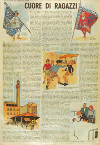
Fu di nuovo il Corriere dei Piccoli del
9 luglio 1950 ad interessarsi del Palio. Anche in quell'occasione, il settimanale vi riservò un'intera pagina, corredando il testo con numerose
fotografie, fra le quali risaltava quella di Gino Vigni, alfiere della Pantera.
(Per ingrandire la pagina, che fa parte della collezione privata “Il Palio di Siena” di Andrea Corti, cliccarci sopra)
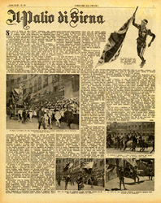
Ed è pure trascorso oltre mezzo secolo da quando Topolino, allora quindicinale, dedicò la prima e la quarta pagina di copertina al Palio.
A dire il vero, quello che comparve nel n.48 del 10 agosto 1952, fu soltanto un accenno, infatti come ci suggerisce Duccio Mancini, che possiede il giornalino, al suo interno non si trovava nessun altro riferimento a Siena e alla sua festa.
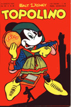 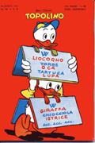
Per poter leggere un vero e proprio racconto a fumetti, dobbiamo attendere il 14 giugno 1953, quando Il Vittorioso,
su soggetto di Roudolph (al secolo Raoul Traverso), illustrato dall'artistica mano di Giorgio Bellavitis, si rivolse al Palio di Siena.
La storia venne quindi ripresa nel maggio 1956 sia dal periodico brasiliano a fumetti Epopeia che la ripropose nella versione in portoghese con il titolo "O Manto de Siena", che in Argentina dall' Anuario de Pimpilena della casa editrice Codex, che aveva diverse filiali in America Latina.
(Per sfogliare le pagine, che fanno parte della collezione privata “Il Palio di Siena” di Andrea Corti e della Sig.ra C.Lezama per la versione in spagnolo, cliccare sopra le copertine)
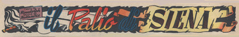 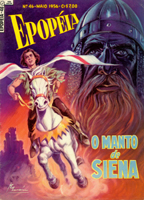
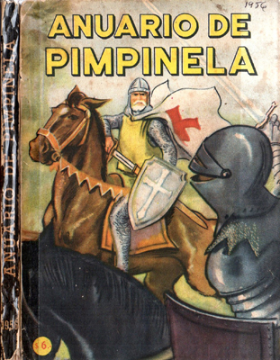
Durante i giorni del Palio, il 1° luglio 1955 il quotidiano il Giornale del Mattino pubblicò una
striscia dal titolo "Le dieci al canape del 2 luglio", con didascalie in versi di Luciano Fini e disegni di Bruno Tanganelli (Tambus),
che ricalcava il genere dei Numeri Unici di contrada in voga in quegli anni.
Questa stessa sorta di disegni sarà in seguito presente su alcuni numeri de "Il Mangia", (guarda il fumetto) il cui direttore era lo stesso Tambus.
(Per ingrandire, cliccare sopra l'immagine)
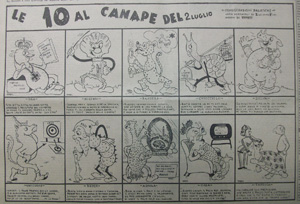
Negli stessi giorni, il Pioniere, giornalino dell’Associazione Pionieri d’Italia legata al Partito Comunista Italiano, uscì con una bellissima copertina disegnata dal fumettista Clario Onesti dedicata ai figuranti del Corteo Storico.
All'interno, una pagina che spiegava per sommi capi lo svolgimento del Palio, corredata dalla foto di un Alfiere della Civetta.
(Per leggere la pagina interna, che fa parte della collezione privata “Il Palio di Siena” di Andrea Corti, cliccare sopra l'immagine)
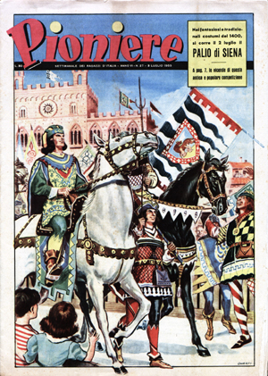
Il 29 agosto 1956, fu di nuovo il Il Vittorioso, a dedicare 14 puntate, al Palio di Siena. Il racconto, di pura fantasia, ebbe per protagonista un cavallo grigio, riconducibile,
a nostro avviso, alla plurivittoriosa Gaudenzia.
Il settimanale, fondato nel 1937, era un periodico per ragazzi, distribuito non in edicola
bensì nel circuito delle parrocchie e degli oratori, stampato dalla Casa editrice AVE, emanazione dell’Azione Cattolica Italiana.
Gli eroi si distinguevano per le loro gesta nobili e valorose,
compiute generalmente in difesa della giustizia, della fede e della patria.
(Per sfogliare il fumetto, che fa parte della collezione privata “Il Palio di Siena” di Andrea Corti, cliccare sopra la copertina)
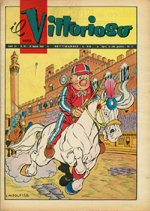
A distanza di due anni dalla distribuzione del film "La ragazza del Palio", interpretato da Vittorio Gasmann, Diana Dors e dalla "nostra" Rosanna Bonelli, uscì nelle edicole un fotoromanzo con le immagini tratte dalla stessa pellicola, sia in italiano che in francese.
(Per sfogliare il fotoromanzo, che fa parte della collezione privata “Il Palio di Siena” di Andrea Corti, cliccare sopra la copertina)
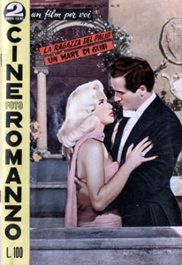
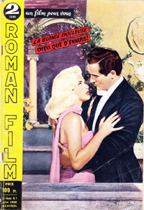
Due pagine dedicate al Palio, comparirono pure nel settimanale fondato dai padri Gesuiti, Vera Vita. Si trattava del n.32 del 19 maggio 1960.
(Per sfogliare il fumetto, che fa parte della collezione privata “Il Palio di Siena” di Andrea Corti, cliccare sopra la copertina)
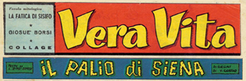
All'interno de "Il Palio per immagini", curato da Sergio Micheli, compariva un racconto, databile intorno ai primi anni '60 del secolo scorso, che si distingueva per le
sue grossolane inesattezze, intitolato Giuseppe corre al Palio.
(Per sfogliare il fumetto, cliccare sopra la copertina)
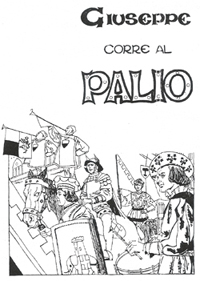
Giungiamo così al 10 marzo 1963, quando il periodico destinato all'infanzia, il Giornalino, iniziò una storia che si completava in 28 tavole,
a cura di Ghelardini e disegnata da Sada, dal titolo "Il ragazzo del Palio".
Il racconto che era ambientato nel 1486, aveva per protagonista Fabio, fantino della Pantera, che al termine di una entusiamante
galoppata ricevette il meritato drappellone dalle mani del Magnifico Pandolfo Petrucci.
(Per sfogliare il fumetto, cliccare sopra la copertina)
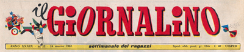
Pure Flash Gordon in una storia, non scevra da errori storici, di Dan Barry del 1964 (il periodo dei viaggi nel tempo) finì nella Siena del Rinascimento, in pieno clima del Palio, riuscendo a evitare di cadere nelle trappole e negli intrighi delle rivalità contradaiole.
(Per sfogliare il fumetto cliccare sopra il logo)
I fumetti sul Palio sbarcano anche oltralpe. Il 22 luglio 1965 il periodico cattolico J2 Jeunes pubblicò una originale
rivisitazione storica della vita senese nei secoli, illustrata da Yves Groux, con i testi di Claire Godet dal titolo Les Grandes heures de Sienne.
(Per sfogliare le pagine, che fanno parte della collezione privata “Il Palio di Siena” di Andrea Corti, cliccare sopra il logo)
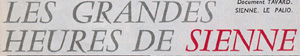
Un avvincente fumetto fu quello che uscì nei numeri 3 e 4 del gennaio 1968 del settimanale Vitt, ancora opera di Roudolph e Bellavitis, dal titolo "Il Palio di Siena".
Il racconto riprendeva come fondamentale motivo quello di un glorioso mantello crociato
di Cavaliere, assunto a simbolo del primo drappellone del Palio. Si trattava di una vicenda ambientata
in un mondo medioevale, tendente a riassumere il carattere battagliero e mistico dei Senesi.
(Per sfogliare le pagine, che fanno parte della collezione privata “Il Palio di Siena” di Andrea Corti, cliccare sopra il logo)
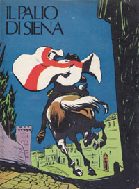 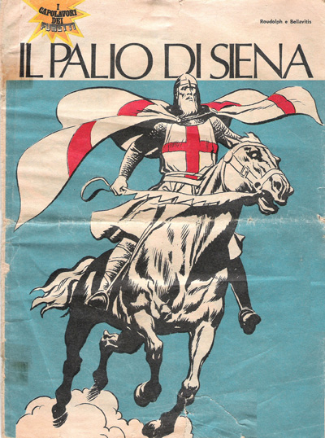
Sempre nel 1968, la Mondadori pubblicò un albo che aveva come protagonista Nic Cometa, famoso pilota di automobili e amico di un fantino, anch'egli pilota, che morì
a seguito di un incidente avvenuto in gara. Il testo, che ricalcava il più famoso Michel Valliant, era opera di Pier Carpi mentre
le illustrazioni di Zaniboni e Anthony.
(Per sfogliare il fumetto cliccare sopra il nome)
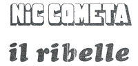
Forse non tutti sanno che il Palio, in versione fumetto, arrivò negli Stati Uniti per merito di Giovanni Ticci, celeberrimo fumettista senese. Ticci, indimenticabile disegnatore di Tex, negli anni ’70 realizzò un'improbabile e fantastica storia a fumetti sul Palio di Siena, per la serie di fantascienza The Twilight Zone. "The Day of the Palio", così si intitolava la storia, narrava, in lingua inglese, le vicende di Tony Marco, uno dei fantini, che a causa di una distorsione temporale “ai confini della realtà” si ritrovò nella Siena del 1672.
Tony si lasciò corrompere e
per punizione venne condannato a cavalcare nottetempo in una Piazza del Campo deserta, per prepararsi a vincere il Palio, nella vana speranza di poter tornare nella sua epoca.
Da tener presente che nel numero 33 de "Il Mangia" del 16 agosto 1972, venne presentata una versione del fumetto tradotta in italiano.
(Per sfogliare il fumetto, che fa parte della collezione privata “Il Palio di Siena” di Andrea Corti, cliccare sopra la copertina)
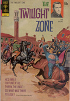
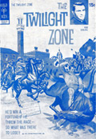
Le due versioni: a sinistra l'originale in lingua inglese, a seguire quella in italiano
Lo stesso fumetto, tradotto in maniera leggermente differente, venne pubblicato l'11 febbraio 1973 dalle edizioni Spada all'interno della collana Phantom, l'Uomo Mascherato, dal titolo: Il giorno del Palio.
(Per sfogliare il fumetto, che fa parte della collezione privata “Il Palio di Siena” di Andrea Corti, cliccare sopra la copertina)
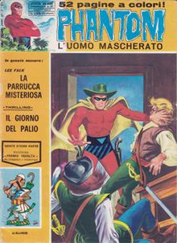
Sempre negli anni'70, venne stampata una vicenda thriller sul Corriere dei Ragazzi dal titolo
"L'agente senza nome", che si ambientava nell'atmosfera paliesca.
Questo entusiasmante fumetto, composto da otto pagine a colori, venne disegnato da Tuis su testo di Pier Carpi. Ci mostrava Drago Simon
impegnato a bloccare una colossale operazione di spionaggio, che vedeva pure in primo piano Ras, fantino tedesco della Giraffa.
(Per sfogliare il fumetto, che fa parte della collezione privata “Il Palio di Siena” di Andrea Corti, cliccare sopra l'immagine)
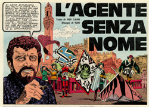
Il primo vero e proprio racconto che vide i personaggi di Walt Disney al Palio, fu quello del 24 aprile 1983 su Topolino n.1430. In quel caso la storia faceva parte di un contesto che vedeva Paperino e suo zio protagonisti in diverse città della Toscana durante il Medioevo. Era un racconto suddiviso in diverse puntate e la 6ª era quella
ambientata a Siena.
(Per sfogliare il fumetto cliccare sopra la copertina)
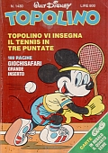
A breve seguì
"Topolino al Palio di Siena" che narrava la storia, suddivisa in due parti, pubblicata sui nn.1549 e 1550 di Topolino del 4 e 11 agosto 1985, realizzata da Pierfrancesco Prosperi (a cui va un ringraziamento per l'aiuto fornitoci) per le matite di Alberico Motta e le chine di Agnese Fedeli.
In questo racconto Topolino e Minni erano a Siena in occasione del Palio, ma come al solito, si trovarono a dover fare i conti con Pietro Gambadilegno, loro storico acerrimo nemico.
(Per sfogliare il fumetto cliccare sopra la copertina)
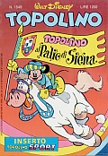
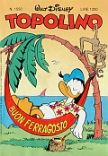
Restiamo sempre negli anni '80, con un capitolo tratto del libro Storia di Siena raccontata a fumetti, edito dalla Tipografia Senese nel 1984.
Autore del testo e delle spiritosissime vignette è l'aquilino Mario Lisi, il cui estro artistico si ritrova pure in alcuni Numeri Unici della sua Contrada.
(Per sfogliare le pagine del fumetto, cliccare sopra le copertine)
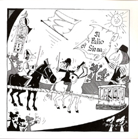
L'Editore fiorentino Lucio Pugliese pubblicò nel 1987 il libro Siena e il suo Palio, illustrato da Rolando Gheri e Luciano Nistri che
attraverso le immagini del fumetto, presentava un susseguirsi degli avvenimenti storici strettamente legati allo snodarsi cronologico della vita delle Contrade e del Palio.
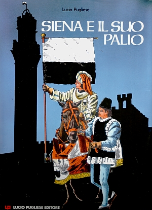
Nel 1991 è la volta di Tiramolla con Un raglio al Palio a immergersi nella nostra Festa con un fantasioso racconto.
L'autore dei disegni è indicato come Roberto Sidos, al secolo
Sandro Dossi (autore di molte storie di Geppo il diavolo buono), che si
firmava così perchè lavorava alla Disney-Italia.
(Per sfogliare le pagine del fumetto, fornitoci da Marco, cliccare sopra la copertina)
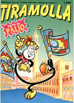
Giungiamo pertanto al dicembre 1995, quando Sergio Staino, attraverso il personaggio di Bobo, racconta la
gita della sua famiglia al Palio di Siena.
(Per ingrandire la pagina, che fa parte della collezione privata “Il Palio di Siena” di Andrea Corti, cliccarci sopra)
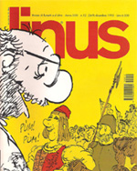
Terminiamo questa rassegna con un fumetto del 2001 in lingua francese, che tradotto in italiano significa l'estate della Lupa, dove gli immaginari personaggi si trovano al centro degli intrighi del Palio.
(Per ingrandire la pagina, cliccare sopra la copertina)
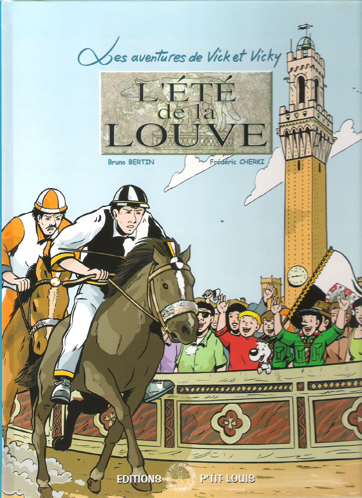

OMONIMIE FRA CAVALLI E PERSONAGGI DEI FUMETTI
|